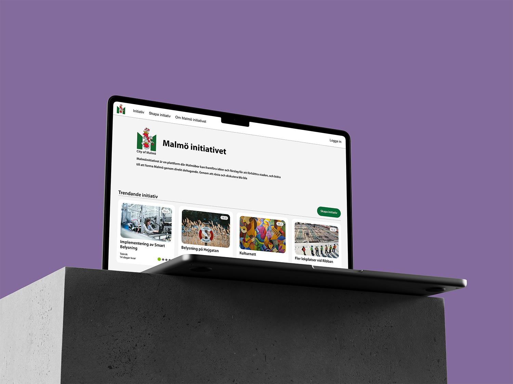
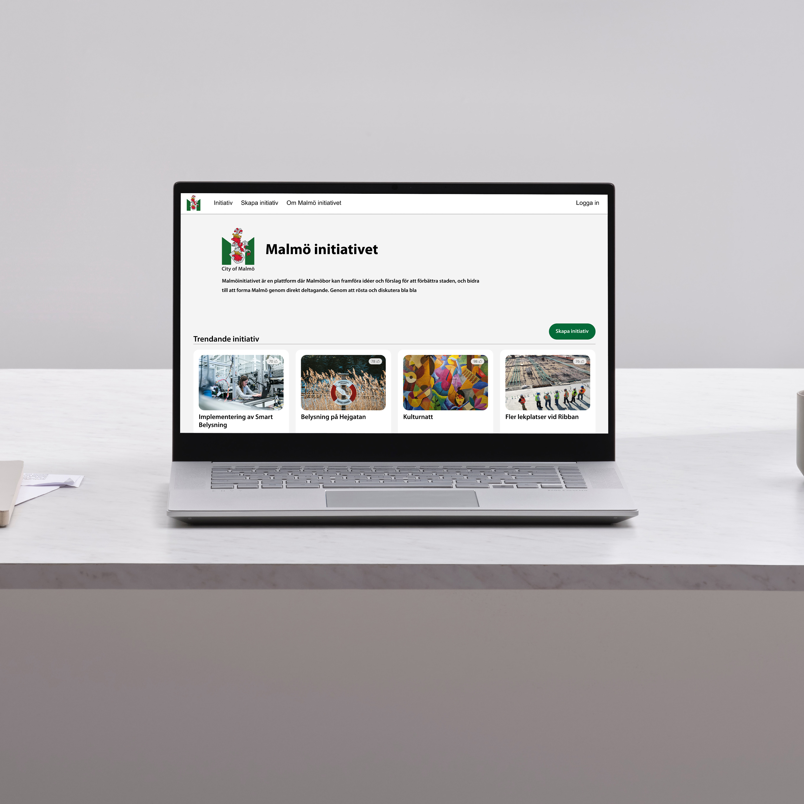
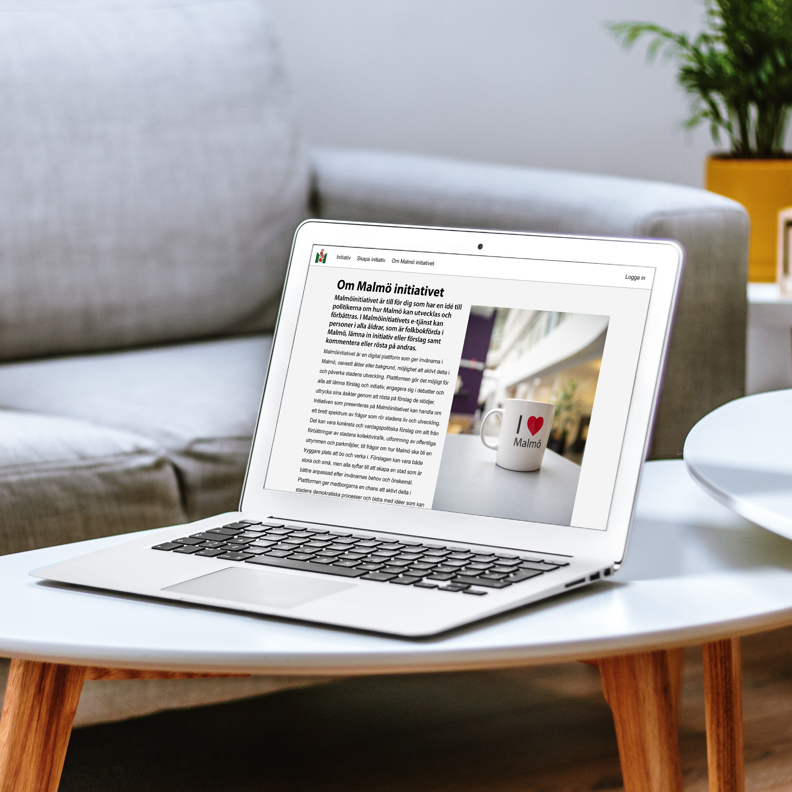
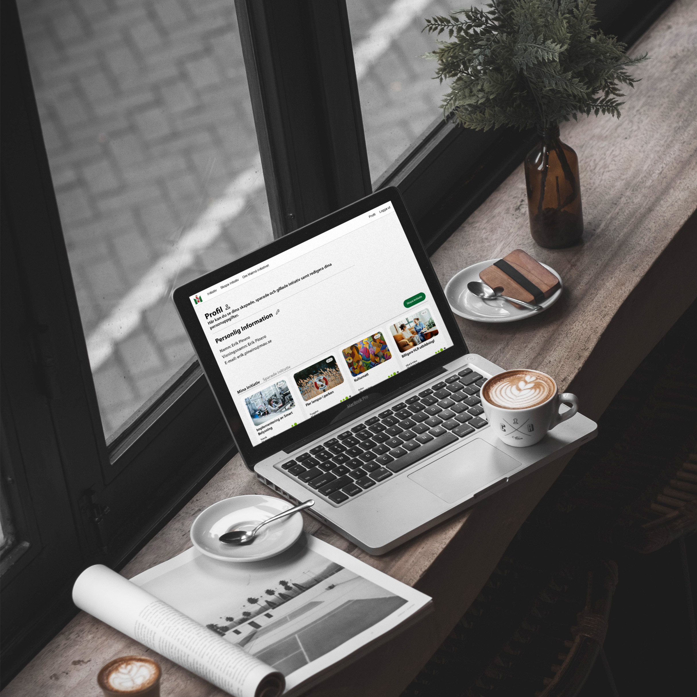
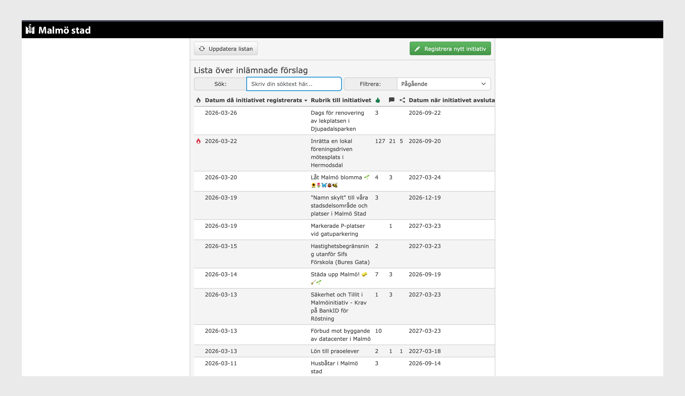
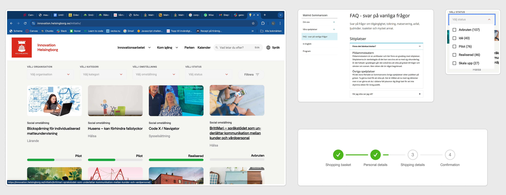

Malmö initiativet
Reimagined website of Malmö Initiativet

Year
2024
Timeframe
4 Weeks
My Role
Co-Designer
Tools
Figma
Project overview
Malmö Initiativet is a redesign of an existing civic platform run by Malmö Municipality, where residents can submit proposals for the city that other users can vote on. Proposals that reach a sufficient number of votes are brought forward within the municipality, and if approved, are realized. The original platform has a dated, forum-like appearance that feels disconnected from the municipality's broader digital presence.
The redesign modernizes the platform to align with Malmö Municipality's existing design system and visual identity, bringing it in line with their other official web properties. Proposals are now presented as filterable cards, making it easier for users to browse, discover, and engage with content relevant to them. Users can vote on and comment on proposals directly, creating a more intuitive and accessible civic experience.
The goal was to transform a functional but visually inconsistent platform into a professional, trustworthy space that encourages citizen participation through clear design and improved usability.



My design process
An overview of my design process
Research + Sketches
The project was carried out by a team of four, with each member taking on different parts of the design. Research began with an audit of the original Malmö Initiativet platform, identifying its key usability shortcomings and visual inconsistencies relative to the municipality's broader design identity.
Looking at comparable civic platforms, the team discovered Helsingborg's equivalent initiative site, a significantly more modern and polished implementation of the same concept. This became a primary reference point for the redesign, informing both the visual direction and the approach to presenting and organizing proposals. Malmö Municipality's own design system and existing web properties were also studied to ensure the redesign would feel like a natural extension of their digital presence rather than a standalone product.



Wireframes + Iterations
Following the research phase, the team evaluated the original platform's components and content, deciding which elements were worth carrying into the new design and which were redundant. From this, wireframes were developed to map out the structure and layout of the key screens.
One deliberate structural decision was splitting the proposal cards into distinct sections, separating trending initiatives and those close to their voting deadline under a "last chance" category, before presenting the remaining proposals below. This hierarchy gives users an immediate sense of what is most active and time-sensitive, encouraging engagement without requiring them to scroll through all content equally.

Final Design
The final design draws heavily from Malmö Municipality's own design system, adopting their color palette and typography to create a result that feels like a natural and credible extension of their existing digital presence. Although the brief allowed for full creative freedom, the team made a deliberate collective decision to stay grounded in realism, designing something the municipality could genuinely adopt as their own rather than taking the redesign in an entirely different visual direction.
Despite working on separate views individually, the team maintained close collaboration throughout, with everyone contributing input across all screens to ensure consistency and a shared sense of ownership over the final result. The project concluded with a presentation of the complete design and prototype.
Reflecting on the project, the design was created before WCAG accessibility requirements became law in Sweden. However, as a government platform, compliance with these standards is particularly important. Revisiting the design today, a thorough accessibility audit would be a priority, though contrast ratios and type sizes, two of the most critical WCAG components, were considered carefully from the beginning, even before they became a legal requirement. A mobile version of the platform was also developed as part of the project, but as it was handled by other team members, it is not included in this project page.